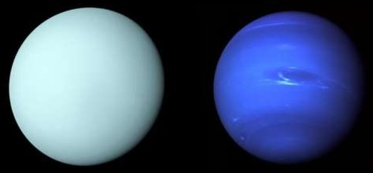
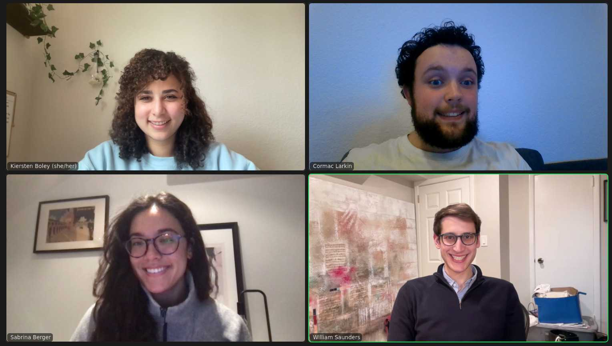
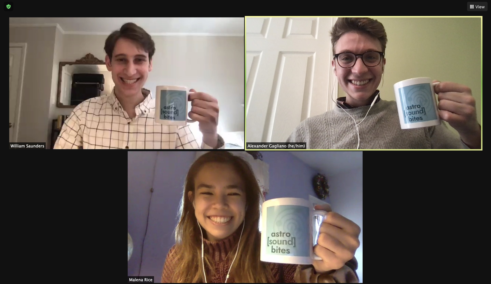

Hello, I'm Will! I am Planetary Scientist working at NASA Langley Research Center in Hampton, VA. My research specializes in measuring the temperatures in the upper atmospheres (stratospheres) of Uranus and Neptune using a technique called stellar occultations. See below for more detail.
I received my PhD in Astronomy from Boston University in 2024, my MA in Astronomy from BU in 2020, and my BA in Physics & Astronomy summa cum laude from the University of Pennsylvania in 2018.

Research: Uranus & Neptune
I study the upper atmospheres of Uranus and Neptune to better understand their temperature structure and how energy is transported around their atmospheres.
Uranus and Neptune are collectively called the ice giants because their atmospheres contain clouds of ice instead of liquid. Methane ice clouds are what give Uranus and Neptune their characteristic blue colors, though there is recent research suggesting that the colors of these planets may be different from what we think. At 20 and 30 times farther from the Sun than Earth, Uranus and Neptune, respectively, receive 0.25% and 0.1% of the sunlight that hits Earth. It's unsurprising that their atmospheres are so cold.
What is surprising, is the finding from the Voyager 2 spacecraft when it flew past Uranus in 1986 that Uranus' upper atmosphere is incredibly hot. The maximum temperature detected was 800 K (530 °C, 980 °F), making Uranus' upper atmosphere among the hottest of all the planets. Neptune's atmosphere was found to be slightly cooler but still much warmer than expected. Further complicating these results are inconsistencies in the Voyager observations that challenge their veracity. Without missions to Uranus or Neptune for decades to come, it remains extremely challenging to even identify the tempertaure of these planets, let alone uncover how they are heated so strongly. This problem is so enigmatic that some astronomers call it the "giant planet energy crisis."
In my research, I aim to better understand the upper atmosphere temperature structures of Uranus and Neptune and work toward an understanding of the energy crisis. To do this, I use a technique called stellar occultations.
Research: Stellar Occultations
A Primer on Stellar Occultations
A stellar occultation is a game of plantary peek-a-boo, from which we can learn about the planet's upper atmosphere.
A stellar occultation occurs when a planet in the solar system passes in front of a distant star, from our point of view, as if to play peek-a-boo with the planet. During the occultation, our view of the star is completely blocked by the planet. The most interesting part of the occultation (for me) is at the beginning and end, when the star isn't completelyblocked, but the starlight is strongly refracted through the atmosphere of the planet. The deeper in the atmosphere the light passes, the greater the refraction, which means the dimmer the star appears.
During an occultation, I measure the apparent brightness of the star and calculate the refraction that caused it. From the refraction, I can then calculate the density, pressure, and temperature of the planet's atmosphere vs. altitude.
Below is an animation (100x speed) showing my observation of a Uranus stellar occultation in October 2022 using NAS's Infrared Telescope Facility located in Mauna Kea, Hawaii. Watch as the star disappears and then reappears behind Uranus. The ring around Uranus is its actual rings, which appear facing us because Uranus spins on its side and we're approaching the solstice.
Below is a simulation of what an idealized occultation looks like and the light curve (star brightness vs. time) that I produce from an occultation. I analyze occultations to measure the pressure, temperature, and density vs. altitude of Uranus' atmosphere.
Past Occultations
For my PhD, I processed 26 Uranus stellar occultations observed between 1977 and 1996, many of which were never published. I updated the processing and analysis procedures, and used them to create new temperature measurements of the upper atmosphere of Uranus. My work culminated in a new, simple atmospheric model for Uranus, which was published in my most recent paper.
Latest and Upcoming Occultations
At NASA Langley, I am working with Kunio Sayanagi to observe upcoming Uranus stellar occultations to determine the state of the upper atmosphere of Uranus in the 2020s. I will process these new occultations using my improved procedure, and pass along the results to those working on a potential Uranus Orbiter and Probe (UOP) mission.
November 12, 2024 Uranus Stellar Occultation: observing from two telescopes in Japan, one telesocpe in Thailand, and two telesecopes in India.
April 8, 2025 Uranus Stellar Occultation: coordinating an observing campaign from six telescopes in the USA: the Lowell Discovery Telescope, the Large Binocular Telescope (largest in the world!), the Apache Point Observatory ARC Telesecope, the NASA Infrared Telesceope Facility, the Canada France Hawaii Telescope, and the McDonald Observatory Struve Telescope.
I have predicted upcoming occultations for the next 10 years, and intend to observe as many as possible!
In this paper, I present all the results of analyzing 26 archival Uranus stellar occltations, and interpret the findings about the atmosphere of Uranus. I present my new model for Uranus, how the atmosphere appears to be much colder than the Voyager 2 data found, and how the energy crisis is still a major unsolved problem.
In this paper, I explain all the details about how I analyzed 26 archival Uranus stellar occltations. I explain two important methods: 1) a new method that I developed to compare the observed occultations to the Voyager 2 data by simulating the Voyager 2 data into occulatations and comparing; 2) my improved pipeline for processed observed occultations into tempertaure-pressure profiles. I demonstrate these techniques using the 1977 occultation as an example.
Standing next to my poster at the American Geophysical Union 2021 Meeting in New Orleans, LA.
In this paper, I present the science case for an Earth-orbiting small satellite to observe stellar occultations. I found that a spacecraft could observe many more occultations than from the ground, and will observe the best occultations with much higher signal-to-noise. We are continuing to explore this idea, which we're calling the Shadow Chaser.
In my first PhD project, I reanalyzed a historic Mars stellar occultation from 1976 and compared it to the findings of the many Mars landers and rovers. I detected the presence of small waves in the atmosphere called gravity waves, which is one of the few detections of such waves in the Martian middle atmosphere.
Outreach
I have undertaken numerous outreach activities during my PhD and today. Here are some of my favorite and most meaningful
In 2019, Malena Rice, Alex Gagliano, and I founded the astro[sound]bites podcast! Each episode features recent posts from Astrobites.org (see below) centered around a theme in astronomy. We occasionally venture beyond research to discuss topics like professional development, graduate student life, sonification, representation in astronomy, and more (these are my favorite).
As each of us graduated, we retired from the podcast and took on new co-hosts. In 2022, Malena retired and Sabrina Berger and Kiersten Boley joined. In 2023, Alex retired and Cormac Larkin joined. In 2024, I retired, followed shortly thereafter by Sabrina and Kiersten, and Cole Meldorf, Lucia Harer, and Shashank Dholakia joined. Astro[sound]bites continues generation after generation!
Astro[sound]bites has received Outreach and Education Grants from the Division for Planetary Sciences of the American Astronomical Society and a Sharing Science grant from the American Geophysical Union. We have presented about our podcast at numerous scientific and outreach conferences (see my CV for full listing).

The a[s]b gang in 2024.

The a[s]b gang in 2021.
Episode 69 & Episode 70: Astronomy 10 Years into the Future, Parts I and II. We interview more than a dozen people about what astronomy might be like in 2033.
Astrobites is a website run entirely by graduate students in astronomy and publishes daily summaries of recent astronomy publications. I was a regular writer for Astrobites from 2019–2021, and served in a variety of leadership positions from 2021–2023. Below are some of my favorite Astrobites posts (find them all at astrobites.org/author/wsaunders).
Brainspace is an augmented reality science magazine for children 9-13 years old. Since 2019, I have written six stories that have been published in Brainspace. Though I usually write about astronomy and space, my most recent article (publishing soon) is all about Pi. (Hoping to have links to my stories available soon.)
REACH: A Space Podcast for Kids
In March 2022, I was featured in an episode of REACH, answering the question "What is a Satellite?" Take a listen to my answer!
In September 2021, I made a guest appearence on GBH-TV in Boston, helping answer the question about where the phrase "dog days of summer" comes from. Watch the segment here: https://youtu.be/CZerMXwQJxU.